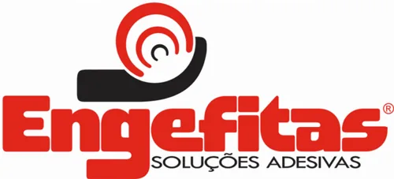

Tudo para pele de vidro e esquadrias: fita estrutural glazing, primer, silano, limpeza, aplicadores e fitas dupla face. A FC Consultoria atende com orçamento direto e suporte técnico.

Pele de vidro · Structural glazingClique em um produto para ver dados técnicos, como aplicar e pedir orçamento.
A colagem estrutural só é segura com a sequência certa. Clique em cada etapa para ver o produto.
A FC Consultoria em Esquadria, de Sinop-MT, representa a Engefitas e a linha ProGlaze em Mato Grosso, com atendimento a vidraçarias, serralherias e fábricas de esquadrias em Sinop, Cuiabá, Sorriso, Lucas do Rio Verde, Rondonópolis e região. Aqui você encontra a fita estrutural glazing, primer, silano, adesivos DF e acessórios para pele de vidro, com folders e indicações de aplicação. Conheça também a consultoria da FC em precificação, implantação de sistemas e orientação de equipes.